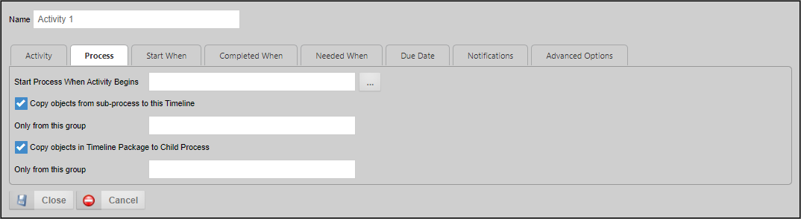

The Process activity enables you to specify a process to run as a subprocess. While you can select either a Workflow or Process Timeline to run as a subprocess, BP Logix recommends that you use a Process Timeline.
When a Process activity runs, the process invoked will run synchronously with the parent process. The Process activity will continue to run until the subprocess completes. Once the subprocess ends, the Process activity will complete, and the parent Timeline will start the next eligible activity. For more information on subprocesses, please see the Subprocesses section of the Process Timelines topic.
In addition to the common properties tabs that appear for all Timeline activities, the configuration settings below are unique to this activity type.

Determines the process that the Activity starts. It also enables objects in the child process to be copied to the parent and vice versa. The objects copied can be limited to a specified group.
You may use the Object Picker to select a process that will automatically start when the Activity starts. The selected process will run as a child process of the current process, i.e., the process containing this Activity.
Checking this option will copy all objects in the child process to the current process.
You may enter the Group Name. Only objects from the specified group will be copied from the child process.
Checking this option will copy all objects in the current process to the child process.
You may enter the Group Name. Only objects from the specified group will be copied from the current process.